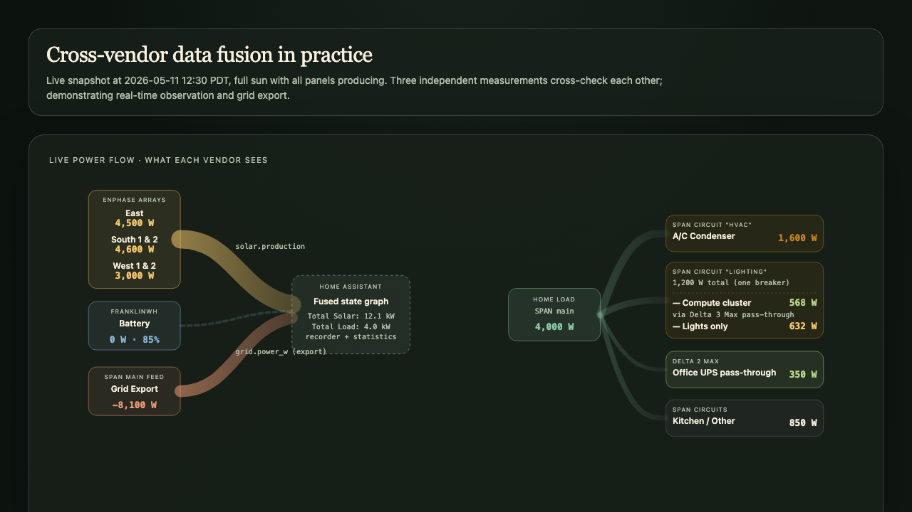
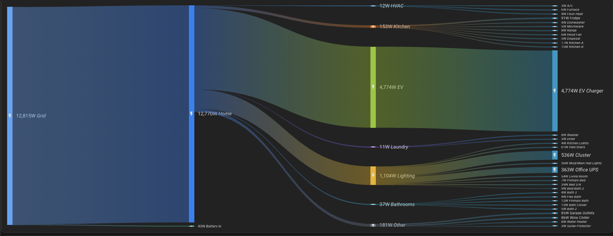
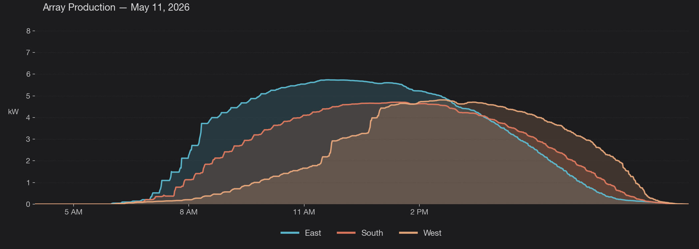
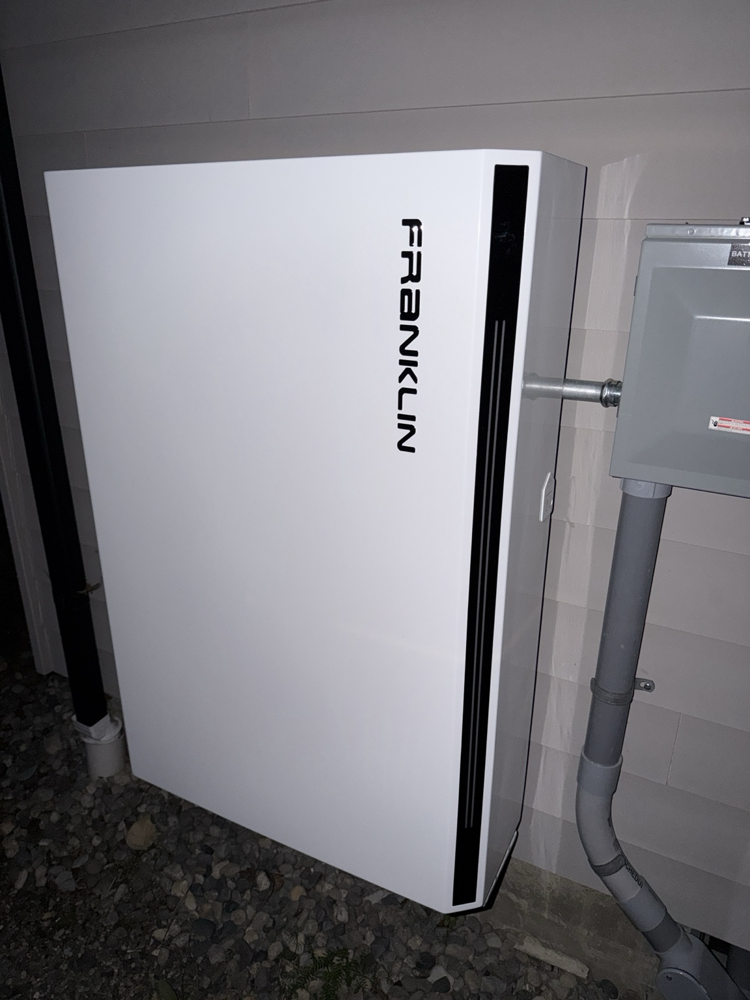
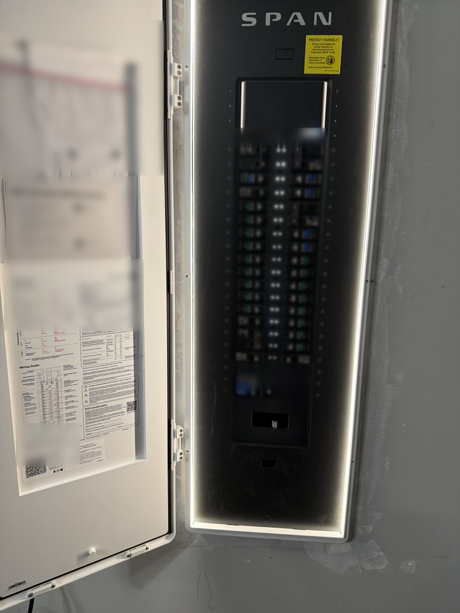
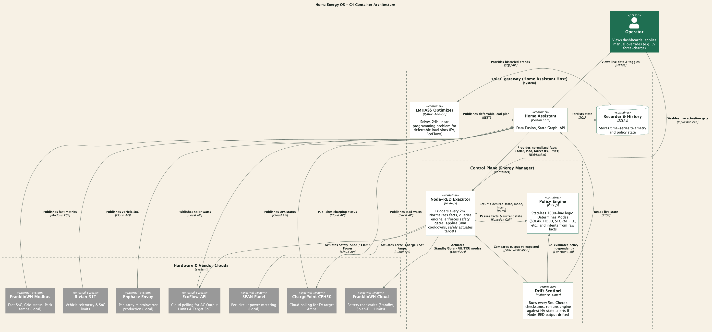
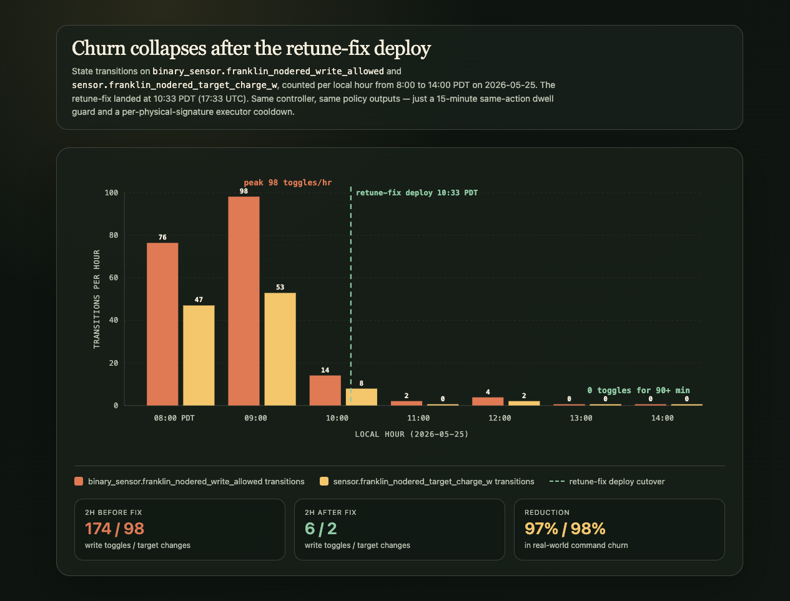
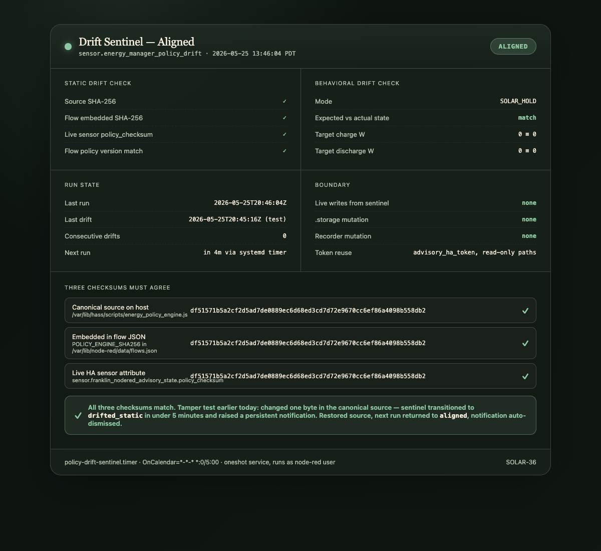
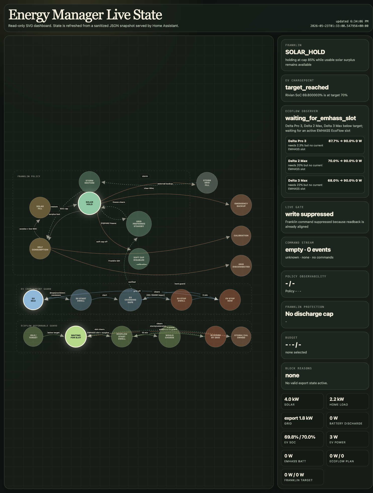

How five vendors, two batteries, an EV, and a careful policy engine became one operating system for my house.

There is a moment when a solar installation stops feeling like a set of appliances and starts feeling like a distributed control system.
The interesting problem is no longer generation or storage alone. It is orchestration across partially trusted, independently operated control planes. For me, that realization came on a quiet afternoon when the house decided to charge the Rivian.
The battery was full enough. The grid was still exporting. The car was home, plugged in, and below its target state of charge. The forecast and the optimizer both agreed it was a good charging window. Node-RED waited long enough to be sure it wasn’t a passing cloud-edge artifact, then pressed the ChargePoint start button through an allowlisted Home Assistant executor. A few seconds later, SPAN showed the EV circuit come alive.
Charge the car when the sun is out. It sounds trivial. The interesting part is everything the system refuses to do. It will not start charging the car if the FranklinWH battery is near reserve. It will not keep charging if the house starts importing too much from the grid, or if the battery begins supporting the EV. It will not call arbitrary Home Assistant services. It will not trust a single integration when SPAN’s circuit telemetry can verify the physical result.
This is the story of that system. It is also a small argument: a working home energy controller cannot be built by a single vendor today, because the substrate it needs is multi-vendor data fusion that the vendors themselves have no reason to ship.
The hardware in my house comes from five different companies that do not coordinate with each other in any meaningful way.
The actuators add two more vendors: a ChargePoint CPH50 Level-2 charger and a Rivian R1T as the largest flexible load on the property.
Each vendor publishes its own data through its own integration, in its own units, on its own cadence, with its own assumptions about what to do with it. Each vendor’s app and cloud can do interesting things in isolation. None of them, individually, can do what their combined telemetry makes possible.
Home Assistant is the substrate that makes the combination possible. Not because HA is clever — it isn’t, particularly — but because HA is the place where five independent state graphs become one queryable state graph, and where a small custom controller can act on the fusion.
The thesis of this writeup is straightforward: the interesting capabilities are emergent from the fusion, not present in any single product. The Reddit thread that landed in r/FranklinWH this week makes this concrete. A homeowner asked whether you could cap the FranklinWH battery at 80% while still discharging below it during peak hours. The current answer from FranklinWH alone is “no, not really” — the standby toggle that caps the SoC is too blunt for time-of-use arbitrage. The fusion answer is “yes, and it’s been running on my house for weeks.” Same hardware, completely different capability, because the controller knows things about solar export and grid prices and forecasts that no single vendor’s app can see.

The solar array is large enough that the control problem is worth solving. 44 Silfab 440 W panels for 19.36 kW DC, behind Enphase IQ8AC microinverters. It’s not one simple south-facing plane. The roof has five different production surfaces, and they behave differently at different times of day:
| Array | Panels | DC kW | Azimuth | Tilt |
|---|---|---|---|---|
| South 1 | 6 | 2.64 | 180° | 21° |
| South 2 | 7 | 3.08 | 180° | 21° |
| East | 17 | 7.48 | 90° | 21° |
| West 1 | 7 | 3.08 | 270° | 21° |
| West 2 | 7 | 3.08 | 270° | flat |
A single forecast curve does not describe this roof well. Morning, noon, and afternoon behave differently — east in the morning, south at midday, west arrays carrying the late afternoon — and the flat west array has its own losses-to-glare profile. The HA forecast model is split into five matching solar entries, one per array, so the system can reason about the day as a changing shape instead of just a daily total.



The rest of the house adds the constraints the controller has to respect:
The division of labor matters and is intentional. Each vendor stays in its lane. The new behaviour is between the lanes.
The non-obvious capabilities all come from triangulating two or more vendors’ telemetry. A few concrete examples.
Franklin SoC from two sources. The FranklinWH aGate
exposes a Modbus interface as well as a cloud API. The controller
subscribes to both. The Modbus side delivers SoC, active power, AC
voltage and current, pack temperatures, grid connection — about 50
distinct signals — on a faster cadence and with no round trip to a
server in another state. The cloud side is the source of truth for
slower-changing values and for write operations. The controller runs a
small template sensor called
franklin_modbus_cloud_soc_delta that compares the two:
- name: "Franklin Modbus vs Cloud SoC Delta"
state: >
{{ (states('sensor.franklinwh_modbus_soc') | float(0)
- states('sensor.franklinwh_state_of_charge') | float(0)) | round(2) }}
unit_of_measurement: "%"A persistent delta means something is wrong on one side. A delta that resolves on its own means I just caught a transient. Neither vendor’s app shows this — there’s only one number in each — but the difference between two numbers is what tells you whether to trust either.
Cluster-only power from an EcoFlow. The SPAN panel has a breaker labelled “Lighting” that, for historical wiring reasons, carries both actual lighting fixtures and a compute cluster that sits behind a Delta 3 Max in UPS pass-through mode. SPAN can only see the breaker total. EcoFlow can only see the pass-through power on its specific input. Subtraction gives the lights-only number that no single sensor measures:
lights_only_watts = span_lighting_breaker_watts - d3m_total_out_power_wattsA snapshot this afternoon: SPAN reports 735 W, D3M reports 562 W passing through to the cluster, lights are using the remaining 173 W. Two vendors that don’t know about each other, one new metric.
Solar surplus that the EV controller can actually trust. “How much surplus solar is there right now?” sounds like it should be one number. It isn’t. There are at least four candidate numbers, each measured differently:
If they agree, the controller proceeds. If two agree and one disagrees by a small amount, the controller picks the most conservative and notes the discrepancy. If multiple sources disagree by a lot, the controller refuses to allocate the surplus to a discretionary load. The EV will not start charging on a single source’s claim of surplus, because a single source can be wrong, and the cost of getting it wrong is unintended grid import or an unexpected Franklin discharge.
Storm awareness that doesn’t depend on the storm. The local NWS alerts, FranklinWH’s own native storm flag, and EcoFlow’s storm-protection status are three independent signals about the same expected weather event. The controller doesn’t need all three to agree before it switches the policy into pre-storm grid-fill mode — but it does require that the chosen safe-import budget come from SPAN’s main-feed headroom measurement rather than any vendor’s assumption.
These are all small things. They add up to a controller that doesn’t get fooled by one bad sensor, one stale forecast, or one ambiguous cloud value.
The Reddit thread referenced earlier was about something specific. A homeowner wanted to cap the FranklinWH battery at 80 % to avoid spending most of its life at 100 % (which is harder on lithium cells than people realize). FranklinWH has an undocumented standby toggle on its cloud API that holds the battery at the cap. The objection in the thread was sharp: if you turn standby on, the battery never discharges, so you lose your time-of-use peak shaving.
The fix is dynamic standby. Rather than a single user-selected “max
SoC” setting, the controller treats the standby toggle as one mode in a
state machine driven by live conditions. The cascade for a normal day,
with cap = 85 %, deadband = 2 %, and
daylight threshold = 500 W, is:
if battery.soc >= cap and grid.is_exporting():
# Earn our keep: hold the cap as long as we are pushing to the grid
return Mode.SOLAR_HOLD(profile="standby", charge=0, discharge=0)
elif battery.soc < (cap - deadband) and solar.surplus > 0:
# Under cap with room to charge: absorb the surplus
return Mode.SOLAR_FILL(profile="solar-fill", charge=solar.surplus)
elif solar.production > daylight_threshold and solar.surplus <= 0:
# Sun is up but home load consumes it all: don't drain the battery yet
return Mode.SOLAR_HOLD(reason="daylight_deficit")
else:
# Evening, heavy clouds, or night: release the cap for peak shaving
return Mode.SELF_CONSUMPTION(profile="time_of_use", limits="20kW / 20kW")This is the soft cap homeowners are asking for. The battery holds at 85 % whenever there is real solar export to support that hold — exactly when the hold is earning its keep. The moment surplus disappears and solar drops below the daylight threshold, the controller releases standby and the battery is fully available to cover the evening load and TOU peak hours, exactly as it would be without any cap at all.
Two additional branches cover edge cases:
NORMAL_NET_METERING to
PRE_STORM_GRID_FILL. The controller charges Franklin from
the grid up to a SPAN-derived safe-import headroom (because pushing
storm pre-fill through your main breaker is exactly the wrong time to
find out your service is undersized).The state machine is implemented as a 500-line pure-JavaScript module with no Home Assistant or Node-RED imports, which means it’s testable in isolation. The current test suite has 144 cases covering: every state transition, every safety condition, every device-level shed and start scenario, every storm/calibration/outage override. The same module is what Node-RED imports at runtime to make every decision.

Earlier this week the deployed system started failing in a specific
way. The EcoFlow safety-shed logic, which I’ll describe in a moment, was
firing about every 30 seconds with the status failed. Over
24 hours, 335 of these failed events accumulated. Zero successes.
The safety-shed is the controller’s defensive backstop for the EcoFlows. If a device is actively pulling AC power to charge itself, and the house is importing from the grid, and the Franklin can’t help, the controller has to assume that EcoFlow is now charging itself from the grid (or worse, from the Franklin’s reserve). The shed command instructs that EcoFlow to stop charging without disabling its AC output to the loads it’s protecting.
The bug, when I traced it: the shed command was writing
value = 0 to the EcoFlow’s AC charging-power slider in Home
Assistant. Each of those sliders has a non-zero minimum — 200 W for
Delta Pro 3 and Delta 2 Max, 50 W for Delta 3 Max — so HA was returning
HTTP 500 on every attempt. The executor caught the exception, recorded
it as failed, and tried again 30 seconds later. The
cooldown that was supposed to suppress retries used a signature that
included the current grid-import wattage in the reason text, so the
signature was different on each cycle and the cooldown never
engaged.
The fix was small. Pin the EcoFlow’s target_soc to the
device’s current SoC (so the device thinks it’s at target and stops
charging through its own logic), and clamp the charging power to the
device’s minimum rather than zero. The cooldown signature was changed to
a stable shape of {id, device, intent} per command,
stripped of all volatile telemetry. A contract test was added to enforce
that the shed handler never writes 0 again.
The whole episode is in the project’s implementation plan with the specific commit hashes, the SPAN/EcoFlow recordings that caught it, and the synthetic shed test that proved the fix. None of that is interesting. The interesting part is the meta-lesson.

I built a small service called the drift sentinel that runs every five minutes on the HA host, independent of Node-RED. It does two things. First, it checks that the policy engine binary deployed on the host matches the policy engine binary in the repository and matches the version embedded in the Node-RED flow’s bundled execution context. If any of the three checksums disagree, the sentinel raises an alert. Second, it re-runs the policy engine against the current HA state and compares the result to whatever Node-RED most recently published. If the live controller disagrees with what the latest policy would say, the sentinel raises an alert.
The sentinel is the thing that would have caught the shed bug in the first hour instead of the first day. It is also the thing that proves, hour after hour, that the deployed system continues to match the source of truth — that nothing has been edited live, that no drift has accumulated, that the controller still does what its code says.
The sentinel is the closest thing this system has to a “test in production.” It’s the same idea as a synthetic monitor for a web service: you run a small, regular, externally-verifiable check that the thing under test is in a known good state. For a home energy controller, that’s the difference between a system that works on the day you wrote it and a system that keeps working on the day you forgot you wrote it.

The most important behaviours of this controller are the ones that produce no commands at all.
In a typical 24-hour cycle the system emits two or three Franklin command bursts and zero EcoFlow or ChargePoint commands. That is not because nothing is happening. It’s because the controller is busy refusing to do almost everything it considers.
Some of the refusals are explicit:
switch.delta_*_ac_enabled write to the executor.Some of the refusals are temporal:
Some of the refusals come from cross-source disagreement:
The point of all these refusals is that doing nothing is the default. Acting requires evidence. Acting automatically, against actuators that touch hardware, requires either redundant evidence or explicit human override.
This is the part the FranklinWH product team is going to have the hardest time reproducing inside their own app, by the way. A safe home energy controller doesn’t look like a feature list. It looks like a long list of conditions under which the feature deliberately does not run.
The version of the system described here works. It has been live for several days under real conditions, it has caught one real bug and recovered from it cleanly, and the drift sentinel has stayed aligned across multiple code deploys. The road from here is not particularly long.
Three pieces are queued in my project tracker as backlog items:
standby_bridge device role baked into the
EcoFlow executor, but the path from “Rivian plugged into Delta Pro 3
during a grid outage” to “Delta Pro 3 is allowed to AC-charge despite
gridConnected = false” is still partially manual. The acceptance
criteria are written; the implementation will land before the next storm
season.Three larger questions remain, and I’d actively welcome correspondence about them.
The first is policy under explicit time-of-use rates, not net metering. Today my policy assumes export is always valid and grid is a seasonal battery. If my utility migrates me to a true TOU rate plan with peak / off-peak / super-off-peak buckets, the policy needs to learn explicit peak avoidance and off-peak charging. The architecture supports it; the policy doesn’t have the branches yet.
The second is HVAC as a deferrable load. EMHASS can model thermal loads, but the comfort / equipment-protection / occupancy constraints make it a much riskier addition than EV or battery charging. I have a feasibility ticket open and explicitly deferred until the rest of the system has accumulated more soak time.
The third is the harder one: what happens when the vendors actually do start shipping the integrated features they should have shipped? If FranklinWH adds a soft cap with TOU release in v2.x of the aGate firmware, do I retire my dynamic standby logic and just use theirs? Probably yes — most of the value of running the controller comes from work the vendors don’t do, not work they could do. The data fusion across all five remains a thing only HA can do. The day Franklin solves the soft-cap problem natively is the day I delete fifty lines of state-machine code and keep the other thousand.
Residential energy systems are becoming distributed control systems. The transition isn’t dramatic and there isn’t a specific switch you flip. It happens when you stop reading vendor dashboards and start reading the fusion view; when “what is the house doing right now” becomes a single question with a single answer instead of five different vendor apps to consult; when “should we charge the car?” becomes a function call against a controller rather than a manual decision.
It happens when refusing to do something becomes the default and acting becomes the exception. When five vendors’ state graphs collapse into one policy and one history. When a contract test gates the next deploy and a drift sentinel gates the live system. When the most boring possible outcome — four hours of steady state on a sunny afternoon with the battery at cap and no commands flowing — is recognized as the point of the work, not the absence of it.

The Reddit thread that pushed me to write this up asked a small question: can you cap the battery at 80 % but still discharge during peak hours? The answer involves a 1,000-line policy engine, a drift sentinel, a multi-vendor data fusion, and three EcoFlows that nobody asked about. That isn’t the right answer for everyone. For some homes it’s wildly more than is needed. For mine, after the third storm season and the second EV and the compute cluster on a shared breaker, it turned out to be exactly enough.
If you have a similar enough setup that any of this resonates, the implementation is in Home Assistant + Node-RED + a small JavaScript policy engine + about a dozen Python helpers, with EMHASS as the optimizer. None of it is proprietary. Most of it is small. The interesting parts are the boundaries between vendors, the trust placed in their telemetry, and the orchestration that happens between their lanes.
Happy to compare notes.
The system in this writeup runs on a residential install in the Pacific Northwest. All the integrations are off-the-shelf Home Assistant components except the policy engine and the safety logic, which are this project’s own code. The drift sentinel runs as a systemd timer service on the HA host. The full ticket trail and architectural decisions are tracked in a private Plane workspace; happy to share specific commit references on request.